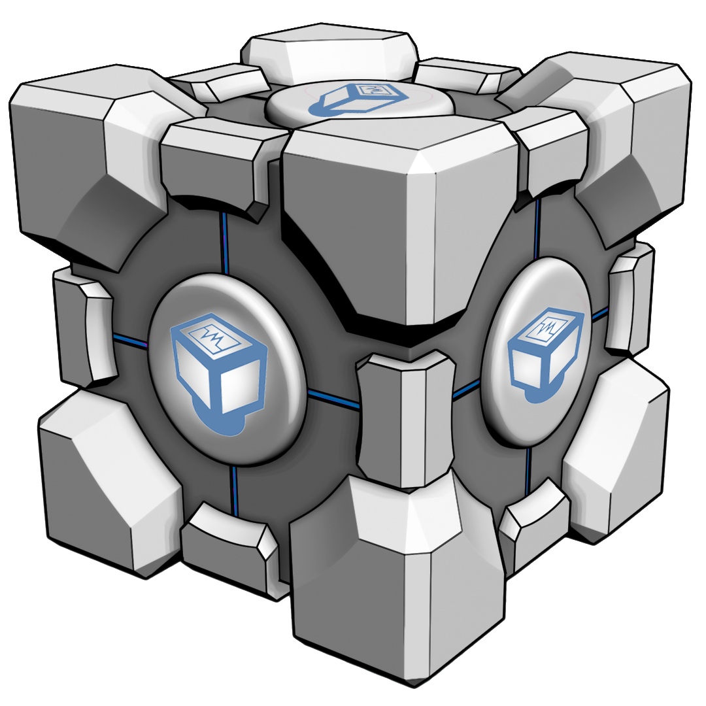
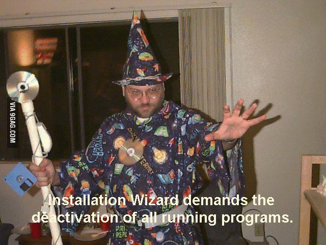

How to Install a Virtual Machine on Windows

What?
What is VirtualBox?
- Installs on your existing computer and extends its capabilities.
- Allows your computer to run multiple operating systems AT THE SAME TIME
- Lets you run as many virtual machines as you like
But don't let its simple front end fool you. VirtualBox is very powerful!
Why?
Why do you need to drop what you're doing and install a virtual machine?
- Running multiple operating systems (OS) simultaneously
- Run software for one OS on another WITHOUT HAVING TO REBOOT
- Easier software installations
- Installing complex setups on real machines can be tedious
- Complex setups can be easily packed into a virtual machine
- Testing and disaster recovery
- Virtual machines can easily be frozen, woken up, COPIED, BACKED UP, and transported between hosts
- Infrastructure consolidation
- Virtualization can REDUCE hardware and electricity COSTS
How?
How do you begin down the glorious path of virtualization?
Step 1:Start with a VirtualBox-supported OS
- Windows XP and beyond
- Mac OS X 10.6 and beyond
- Linux
- Ubuntu 10.04, 10.10, 11.04, 11.10, 12.04, 12.10, 13.04, 13.10
- Debian GNU/Linux 6.0 and 7.0
- Oracle Enterprise Linux 5, Oracle Linux 6
- Redhat Enterprise Linux 5 and 6
- Gentoo Linux
- Fedora Core 6 to 19
- openSUSE 11.0, 11.1, 11.2, 11.3, 11.4, 12.1, 12.2
- Mandriva 2010 and 2011
- Solaris
- Solaris 11 (including Solaris 11 Express and Solaris 10)

Step 2:Become an Installation Wizard
Instructions on how to install on a
Windows machine
- Download the executable file from https://www.virtualbox.org/wiki/Downloads
- Double-click the executable file
- Embrace the welcome dialog and choose where to install VirtualBox
- Include any of the other features offered. Including...
- USB Support
- Networking
- Python Support